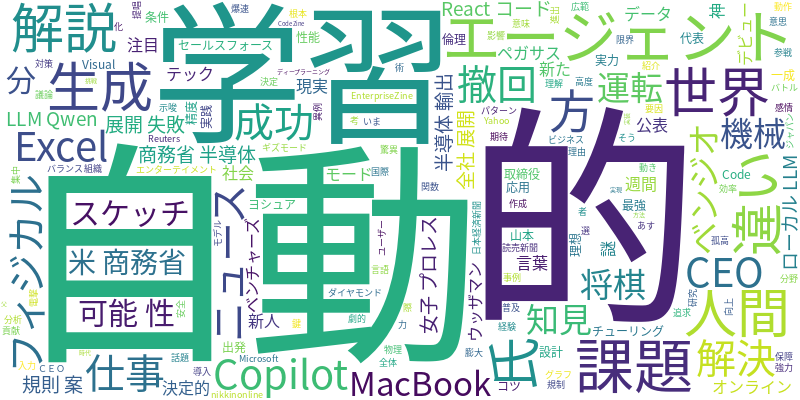

☁️ 今日のトレンドワード

📰 今日のピックアップニュース (10件)
AIと人間の言語学習、決定的な違いとは？
生成AIと人間では、言葉の学び方に根本的な違いがあります。AIは膨大なデータからパターンを学習しますが、人間は経験や感情を通じて意味を理解します。この違いが、AIの可能性と限界を形作っています。
CopilotのExcel神機能で仕事がほぼ全自動に！
Microsoft CopilotのExcelエージェントモードが、仕事の効率を劇的に向上させます。データ分析、グラフ作成、関数入力などがほぼ自動化され、ユーザーはより高度な意思決定に集中できるようになります。
米商務省、AI半導体輸出の新規則案を撤回
米商務省は、AI半導体の輸出規制に関する新規則案を公表からわずか2週間で撤回しました。この動きは、AI技術の国際的な普及と安全保障のバランスを巡る議論に影響を与えそうです。
フィジカルAIで現実世界の課題解決へ
ペガサス・テック・ベンチャーズのウッザマンCEOは、フィジカルAIによる現実世界の課題解決に注目しています。AIが物理的な世界でどのように機能し、社会に貢献できるかについて語っています。
AIが女子プロレスに電撃参戦！
謎の新人AIが女子プロレスの世界にデビューするという異例のニュースです。AIがエンターテイメント分野に進出する新たな事例として、注目を集めています。
AIエージェント全社展開の失敗要因と成功の鍵
AIエージェントの全社展開が失敗する理由と、セールスフォースが提唱する成功のための4つの条件が解説されています。組織全体でAIを導入する際の課題と対策が示唆されています。
MacBookで爆速！最強ローカルLLM「Qwen3.5」
MacBookでも動作し、驚異的な性能を持つローカルLLM「Qwen3.5」が話題です。このモデルの解説と、その強力な機能について詳しく紹介しています。
将棋AIの知見が自動運転へ、機械学習の実力
チューリング代表取締役CEOの山本一成氏が、将棋AIで培われた機械学習の知見が自動運転などに応用される可能性について語っています。AI技術の広範な応用力に期待が寄せられます。
「善きAI」の理想を追求するベンジオ氏の再出発
「ディープラーニングの父」と呼ばれるヨシュア・ベンジオ氏が、倫理的で「善きAI」の実現に向けた新たな挑戦を始めました。AIの社会実装における倫理的課題への向き合い方が問われています。
AIでスケッチからReactコードが5分で生成？
AIを活用した「Visual-to-Code」技術により、スケッチからわずか5分でReactコードが生成される可能性が示されています。その実践方法や精度を高めるための設計のコツが解説されています。
本日のAI・テック業界は、生成AIの進化と社会実装における様々な側面が浮き彫りとなりました。人間とAIの学習方法の違いに言及する記事からは、AIの理解の深まりと応用範囲の拡大が伺えます。一方で、Microsoft CopilotのExcel機能のように、実務効率を劇的に向上させるツールも登場し、AIがビジネス現場に浸透している現状を示しています。AI半導体輸出規制の撤回というニュースは、国際的な技術競争と安全保障の複雑な関係性を示唆しています。また、AIエージェントの全社展開の難しさや、ローカルLLMの高性能化、さらにはAIがプロレスデビューするというユニークな動きまで、AIの多岐にわたる進化と影響力を感じさせる一日でした。機械学習の知見が自動運転に応用される可能性や、「善きAI」を目指す研究者の活動は、AIの未来に対する期待と倫理的な議論の重要性を改めて示しています。